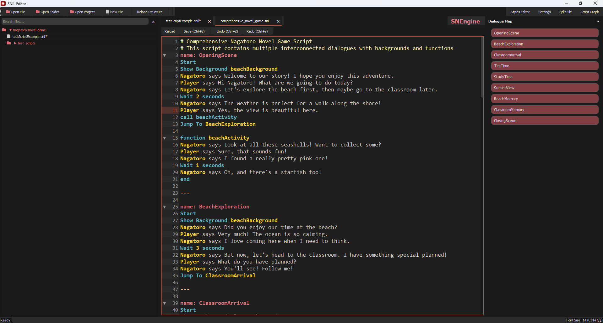
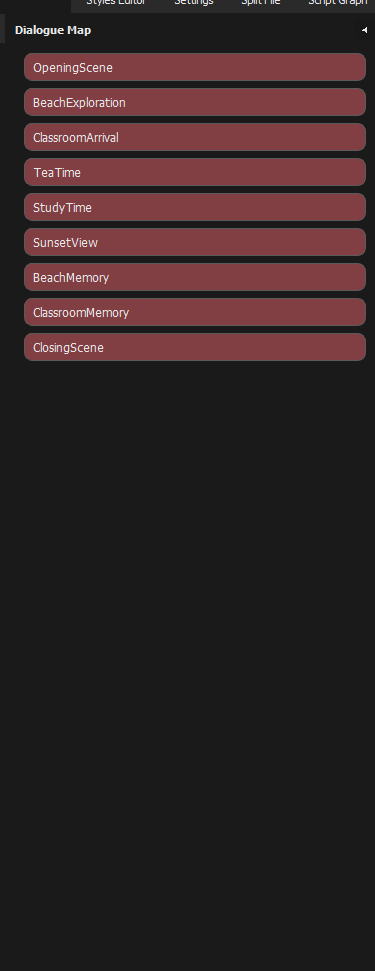
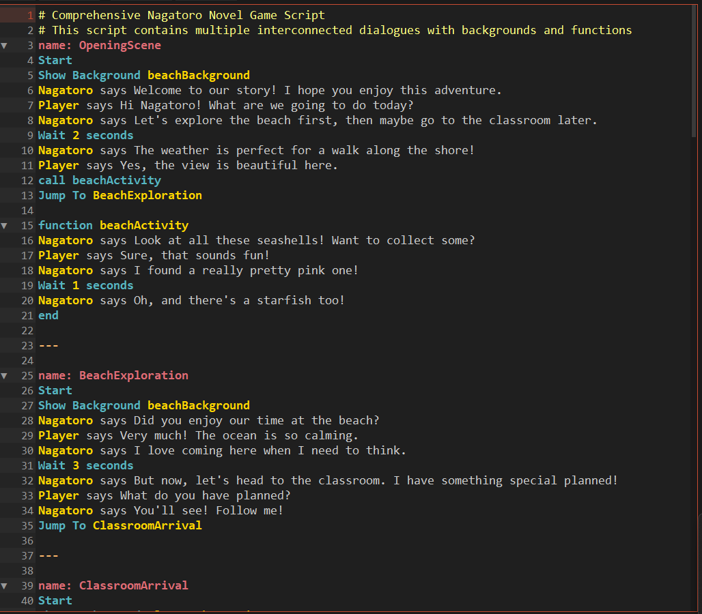

A specialized text editor for working with SNIL (SNEngine Intermediate Language) files in SNEngine visual novel projects.



For SNIL files with support for directives, dialogue, comments, and keywords
Tree view navigation for SNEngine projects
Map panel to view conversation flow
To understand the structure of your visual novel
Validation and error detection
Restore open tabs and prevent data loss
Personalize your editing experience
Capabilities for large dialogue files
The SNEngine Code Editor simplifies the process of creating and editing SNIL scripts for visual novels built with the SNEngine framework. SNIL is a domain-specific language for creating visual novel content with commands for dialogue, character management, background changes, conditional logic, and more.
The editor provides developers with a dedicated environment that understands the SNIL syntax and provides helpful tools for faster and more efficient development.
SNIL script files containing visual novel dialogue and logic
Containing multiple SNIL files organized in a structured format